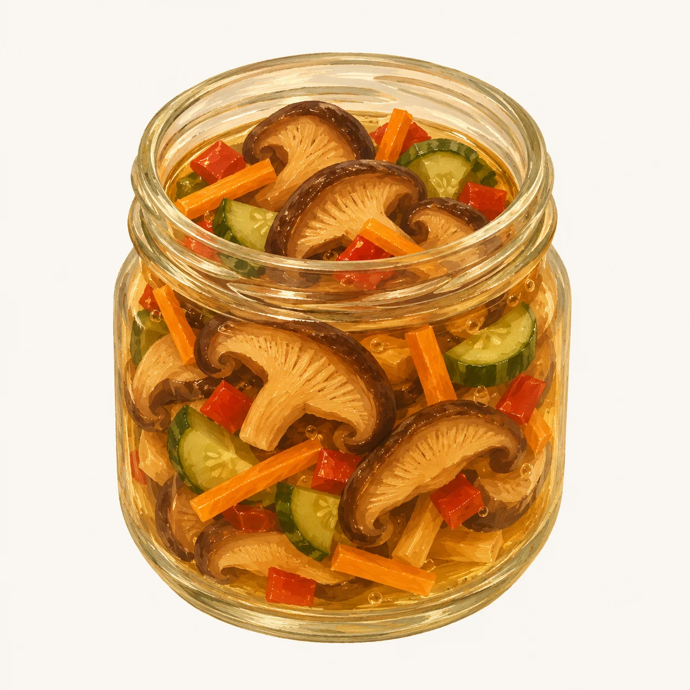
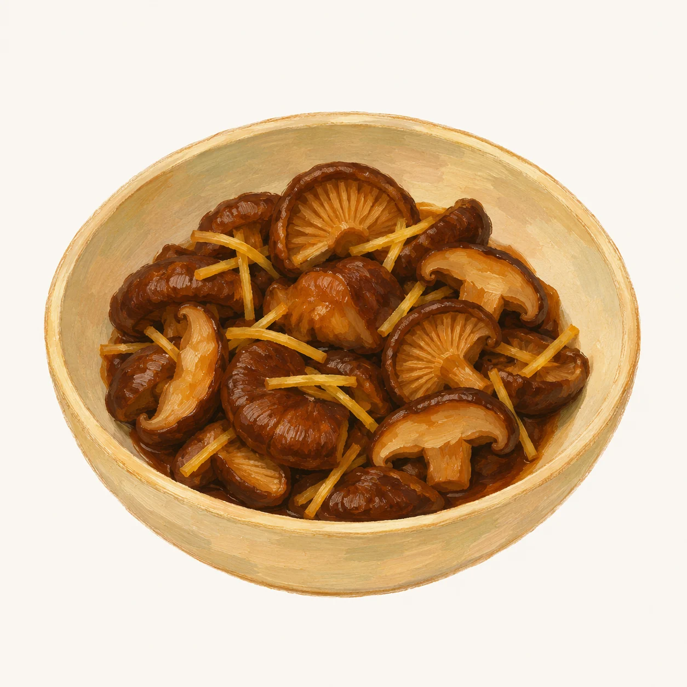
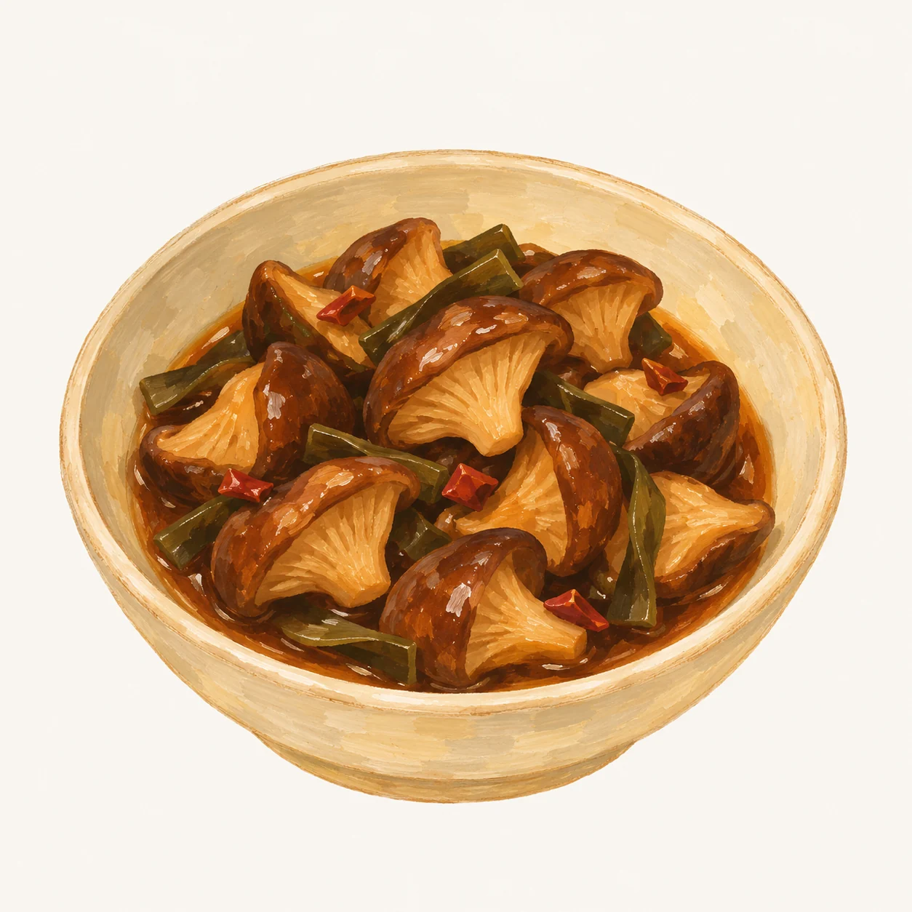

Un acompañamiento de hongos, vegetales y un fondo suave de kombu.

Ilustración orientativa de la receta
Materia prima
20 g de shiitake seco
Reposo de la fuente
Una noche en refrigeración
Para acompañar
Arroz, una entrada o vegetales cocidos
Alérgenos
Sin alérgenos principales en la fórmula; revisar las etiquetas del vinagre y los vegetales
Ingredientes y preparación +
Ingredientes
20 g de shiitake seco
120 g de vegetales: por ejemplo, zanahoria, pepino y pimentón
350 ml de agua potable para rehidratar
100 ml de vinagre de uso alimentario
3 cucharadas de azúcar
1 cucharadita de sal
5 g de kombu
1 hoja de laurel
La fuente no especifica la acidez del vinagre ni el pH final. Esta proporción es una referencia culinaria para refrigeración, no una fórmula de acidificación validada.
Preparación
Rehidrata el shiitake con el agua medida, siguiendo las instrucciones del envase para el tiempo y las condiciones. Conserva el líquido y cuélalo para retirar partículas. Quita las partes leñosas y corta los hongos en láminas de unos 3 mm.
Pon el líquido, los hongos, el vinagre, el azúcar, la sal, el kombu y el laurel en una olla. La fuente indica diez minutos justo por debajo del hervor. Comprueba que el shiitake quede completamente cocido; el tiempo puede variar.
Lava los vegetales bajo agua potable y córtalos con utensilios limpios. Retira el kombu y el laurel de la olla. Reparte la preparación en recipientes pequeños y poco profundos, aptos para alimentos, e incorpora los vegetales.
Refrigera pronto, sin dejar la preparación más de dos horas fuera del frío. No esperes a que una olla grande se enfríe sobre la mesa. Deja reposar una noche en refrigeración y mantén a 4 °C o menos.
Adaptamos el enfriamiento a las recomendaciones de la FDA. No asignamos una vida útil a esta versión. Cuidados antes de guardar ↓
Basada en Healthy Shiitake · Shiitake seco y vegetales en vinagre ↗. Conserva las cantidades de la fuente; vegetales de ejemplo y manejo del enfriamiento explicitados aquí. No sustituir el hongo seco por el mismo peso de fresco.
02 · Tsukudani con jengibre
Soya, jengibre y shiitake.
Una salsa corta, dulce y salada que se concentra alrededor del hongo.

Ilustración orientativa de la receta
Materia prima
100 g de shiitake fresco
Rendimiento de la fuente
2 porciones de acompañamiento
Alérgenos
Soya; posible trigo según la salsa
Ingredientes y preparación +
Ingredientes
100 g de shiitake fresco pequeño
10 g de jengibre fresco
30 ml de salsa de soya oscura japonesa — 2 cucharadas
1 cucharada de azúcar
30 ml de agua potable — 2 cucharadas
La receta usa koikuchi, la soya oscura japonesa. Revisa la etiqueta: una salsa china oscura puede aportar un sabor y una salinidad diferentes.
Preparación
Limpia los hongos con un cepillo suave o un paño húmedo, sin dejarlos en remojo. Retira las partes leñosas de los tallos. Corta el jengibre en tiras finas.
Calienta en una olla el agua, la soya, el azúcar y el jengibre hasta que hiervan suavemente.
Incorpora los shiitakes y coloca una tapa interior apta para cocinar que descanse sobre los ingredientes. Cocina a fuego suave hasta que el hongo esté completamente cocido y el líquido se haya reducido, sin quemar la salsa. Si se seca antes de completar la cocción, añade un poco de agua.
Sirve como acompañamiento. Si vas a guardarlo, divide en recipientes pequeños y poco profundos y refrigera pronto, a 4 °C o menos.
Es una cocción en soya, no un encurtido. La fuente no documenta duración de conservación. Cuidados antes de guardar ↓
Basada en Kamada Shoyu · Shiitake no tsukudani ↗. Cantidades de la fuente, convertidas con una cucharada de 15 ml para los líquidos. Añadimos instrucciones de cocción completa y refrigeración.
03 · Tsukudani con kombu
Shiitake, kombu y mirin.
Cuartos de shiitake y kombu en una reducción de sake, soya y mirin.

Ilustración orientativa de la receta
Materia prima
500 g de shiitake fresco
Cocción de referencia
1 h de cocción + 10 min de reposo
Alérgenos e ingredientes
Soya; posible trigo. Contiene sake y mirin
Ingredientes y preparación +
Ingredientes
500 g de shiitake fresco
20 g de kombu
4–5 ajíes secos japoneses pequeños, tipo takanotsume
150 ml de sake
100 ml de salsa de soya japonesa
150 ml de mirin
1½ cucharadas de azúcar
7,5 ml de vinagre — ½ cucharada
Conversiones con taza japonesa de 200 ml y cucharada de 15 ml. El picante depende del ají; no asumir equivalencia con cualquier variedad local.
Preparación
Limpia los shiitakes con un cepillo suave o un paño húmedo, sin dejarlos en remojo; retira las partes leñosas y córtalos en cuartos. Prepara el kombu según su etiqueta y córtalo en trozos pequeños.
Pon todos los ingredientes en una olla con tapa. Lleva a hervor a fuego medio y luego baja el fuego.
Cocina tapado a fuego suave durante aproximadamente una hora, mezclando una o dos veces. Verifica que los hongos estén completamente cocidos y que la salsa no se queme. Añade un poco de agua si se seca antes de terminar.
Apaga y deja reposar diez minutos. Si sobra demasiado líquido, reduce destapado a fuego medio. Sirve o reparte en recipientes pequeños y poco profundos y refrigera pronto, a 4 °C o menos.
La pequeña cantidad de vinagre no demuestra una acidificación suficiente para guardar fuera del frío. Cuidados antes de guardar ↓
Basada en Zojirushi · Shiitake y kombu no tsukudani ↗. Cantidades y cocción de referencia de la fuente. Añadimos controles de cocción y manejo del frío. No se ha validado su vida útil en nuestra cocina.
Conservación y lecturas de referencia +
Antes de guardar
El frío también es un ingrediente.
Una preparación cocinada necesita un manejo cuidadoso después de salir de la olla.
Cocina, divide y refrigera
Cocina completamente el shiitake. Un salteado rápido puede ser insuficiente.
Usa recipientes limpios, pequeños y poco profundos. Refrigera antes de que transcurran dos horas; dentro de una hora si el ambiente supera aproximadamente 32 °C. No esperes a que una olla grande se enfríe sobre la mesa.
Mantén el refrigerador a 4 °C o menos y compruébalo con un termómetro.
Estas recetas no incluyen un proceso validado para conservar a temperatura ambiente. Un cierre hermético, aceite, sal o vinagre no sustituyen esa validación.
No se asigna vida útil a estas versiones. Las ilustraciones representan las preparaciones; no documentan ensayos de conservación.
La investigación china explora el shiitake en salsas con ají, pastas fermentadas y ajo negro. Son referencias para seguir explorando sabores; sus fórmulas y procesos necesitan aclaración antes de llevarlos a una receta doméstica.